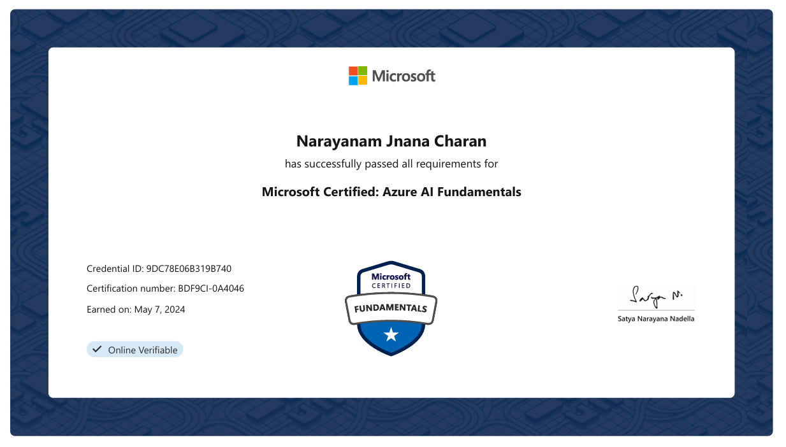
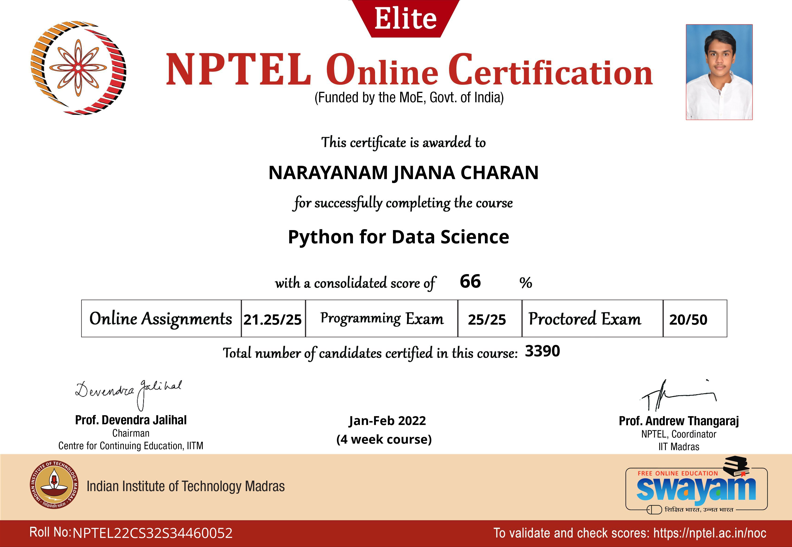
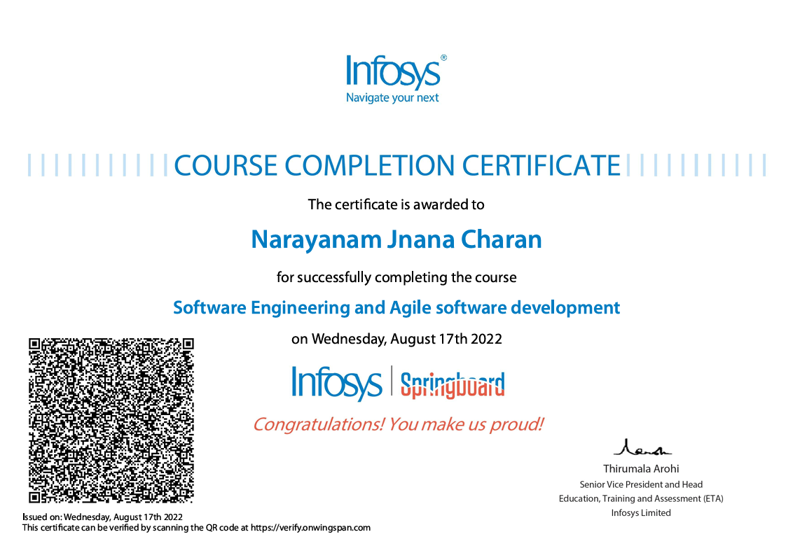
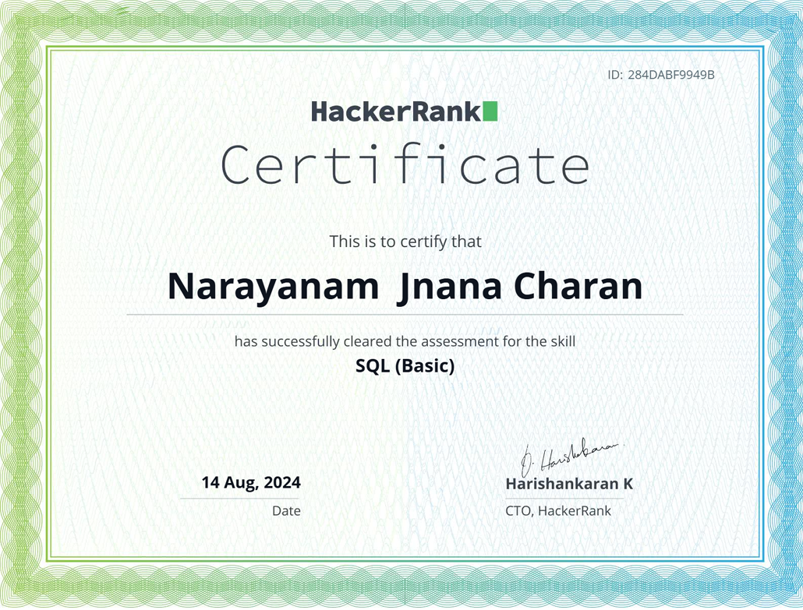
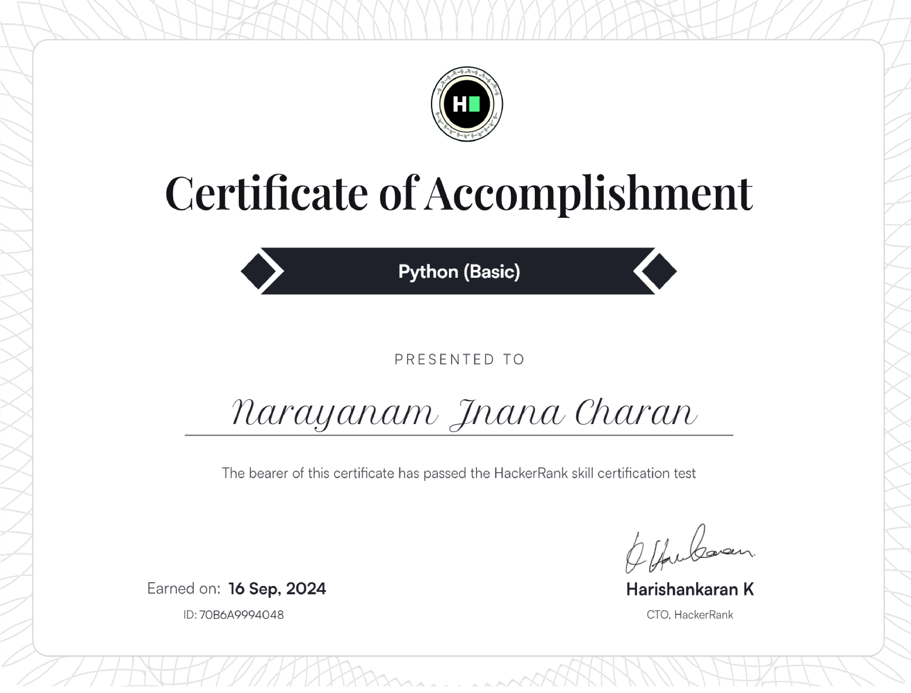

Certificates Inventory 💼

Microsoft Azure AI Fundamentals
Description:
Earned certification showcasing foundational expertise in Azure
Cloud services for AI. Demonstrates understanding of Azure-based
AI tools, including cognitive services, machine learning models,
and AI integration capabilities within Azure Cloud. Highlights
skills in leveraging Azure to build, manage, and deploy AI
solutions effectively.

Mobility and Device Fundamentals (MTA)
Description:
Certified in the fundamentals of mobility and device management,
emphasizing the configuration, deployment, and security of
devices within a business environment. Proficient in
understanding device management concepts, cloud services
integration, and managing mobility solutions across Microsoft
platforms.

Python for Data Science (NPTEL)
Description:
Completed a comprehensive course on Python programming tailored
for data science applications. Gained expertise in data
manipulation, visualization, and analysis using libraries like
NumPy, pandas, and Matplotlib. Developed skills in applying
Python for statistical analysis, machine learning, and handling
large datasets effectively.

Software Engineering and Agile software development
Description:
Acquired foundational knowledge of software engineering
principles and Agile methodologies. Proficient in Agile
practices, including Scrum and Kanban, with a focus on iterative
development, collaboration, and delivering high-quality software
solutions. Gained insights into the software development
lifecycle (SDLC), version control, and modern development tools.

SQL(Basics) from HackerRank
Description:
Demonstrated proficiency in fundamental SQL concepts, including
writing queries to retrieve, filter, and manipulate data.
Skilled in using SELECT statements, JOIN operations, aggregate
functions, and handling relational database structures.
Validated problem-solving abilities through hands-on challenges
on the HackerRank platform.

Python(Basics) from HackerRank
Description:
Validated foundational Python programming skills, including
syntax, control structures, data types, and basic
problem-solving techniques. Demonstrated ability to write
efficient code for algorithms, conditional statements, loops,
and data manipulation tasks through practical challenges on the
HackerRank platform.